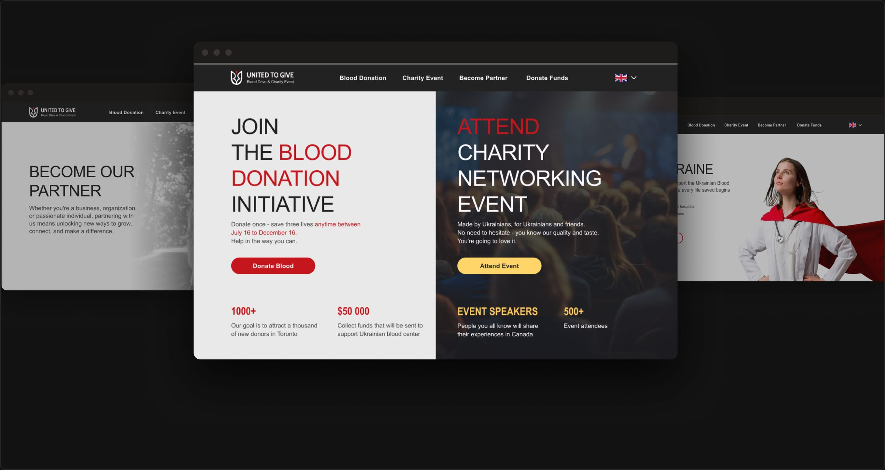
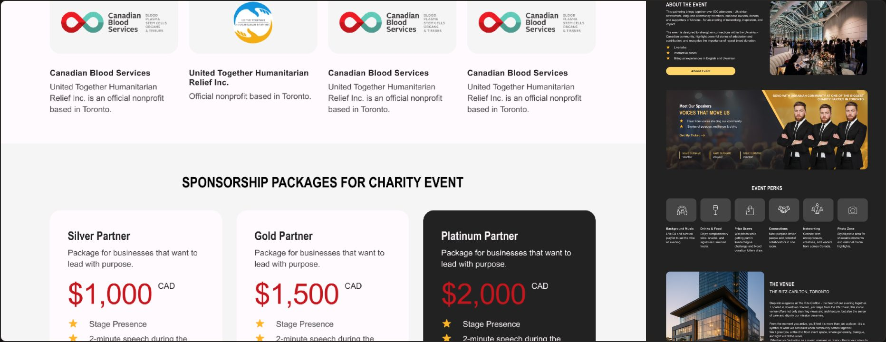
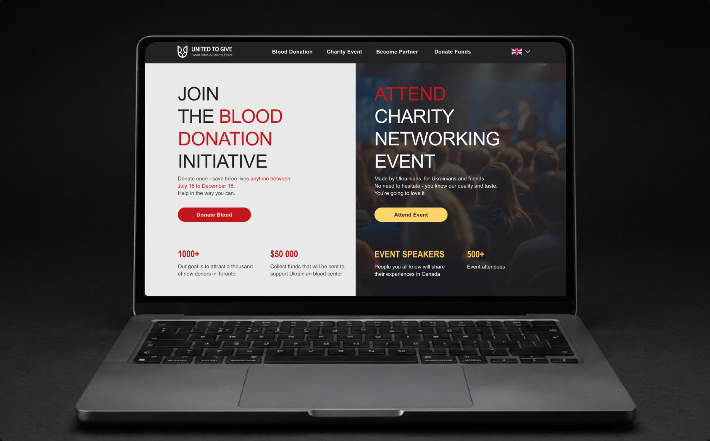
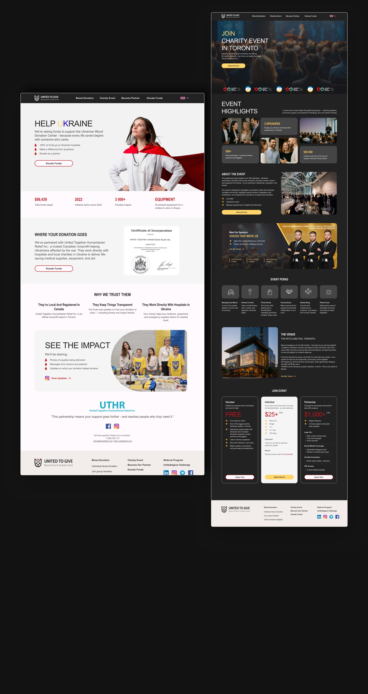
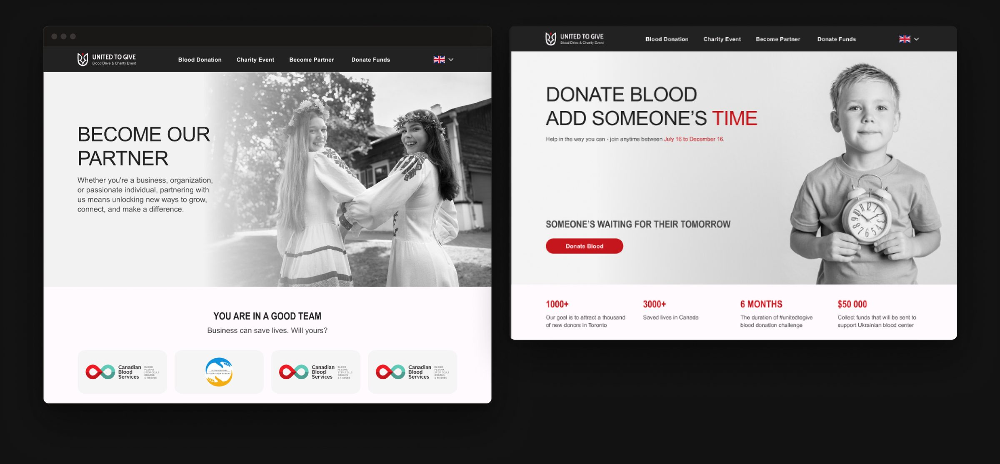
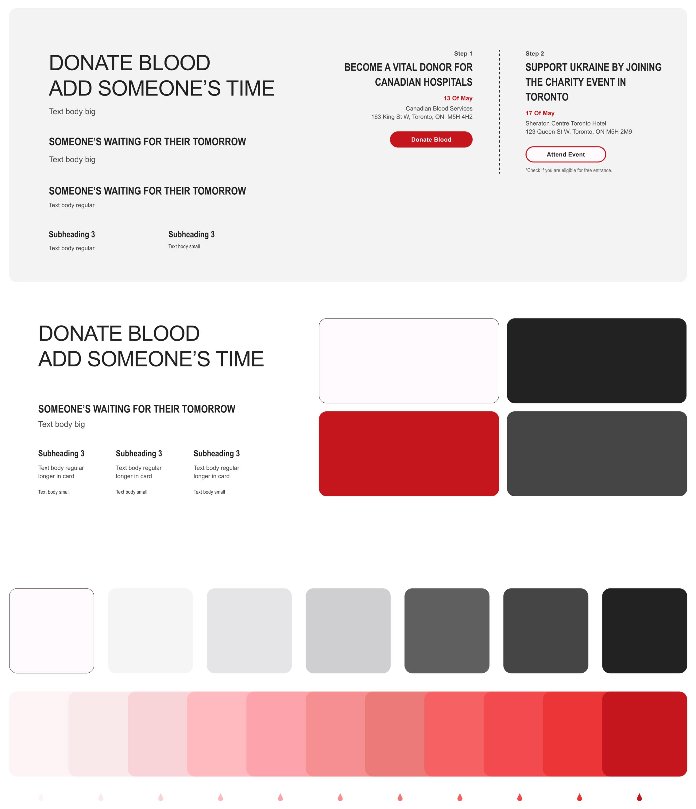
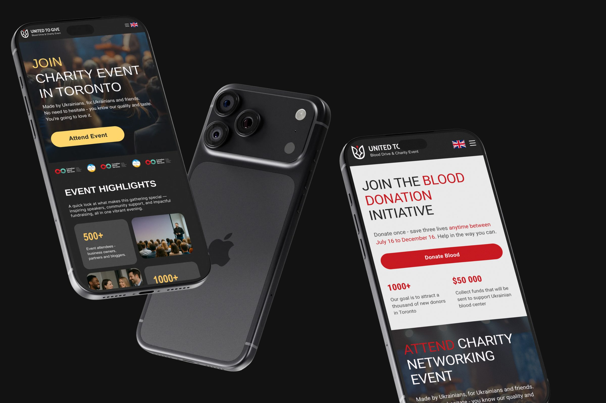
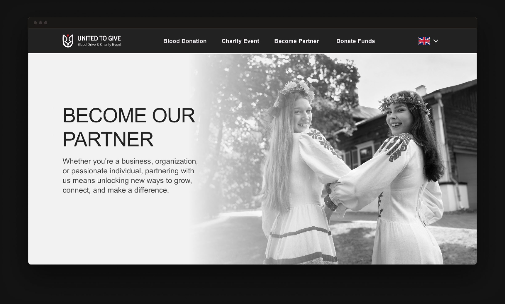

United to Give
Responsive website design for a Canadian charity initiative focused on community events, blood donation drives, and seamless charitable giving.

Context
United to Give is a charity initiative in Canada built around community events and giving back — including blood donation drives, charitable donations, and community activities. The organization needed a responsive web presence that could communicate their mission clearly and make it easy for people to participate.
My Role
I worked as a UI/UX designer under the direction of a lead designer. My focus was on responsive website design — creating cohesive desktop and mobile experiences across multiple page types including the main site, event pages, blood donation pages, and charity donation pages.
Challenge
Design a responsive website that serves multiple purposes — from informing visitors about the initiative to enabling participation in events and donations — while maintaining a warm, approachable, and trustworthy visual identity across all screen sizes.
Approach
Our strategy focused on developing modular design blocks that translate seamlessly from wide desktop displays to narrow mobile ports. By prioritising clean typographic grids and strict aesthetic constraints, we built a digital system where call-to-actions remain prominent yet deeply integrated with the editorial rhythm.

Final Design

Donate Funds
Full-page overview


Visual Identity
Design System

Desktop & mobile viewports


Reflection
This project strengthened my skills in responsive design and designing within a collaborative team structure. Working across multiple page types — each with distinct functional requirements — taught me to maintain visual consistency while adapting to different content needs.